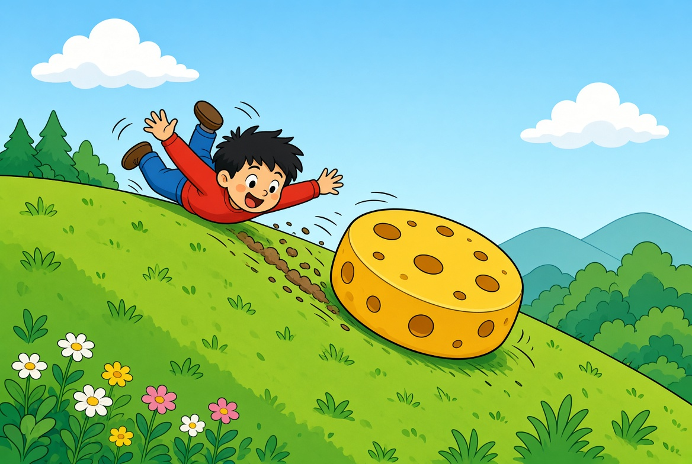

Cheese Rolling
Cheese rolling comes from England. People run down a steep hill after a round cheese. The first person to the bottom wins the cheese. It looks fun, but people can get hurt.

Cheese rolling comes from England. People run down a steep hill after a round cheese. The first person to the bottom wins the cheese. It looks fun, but people can get hurt.